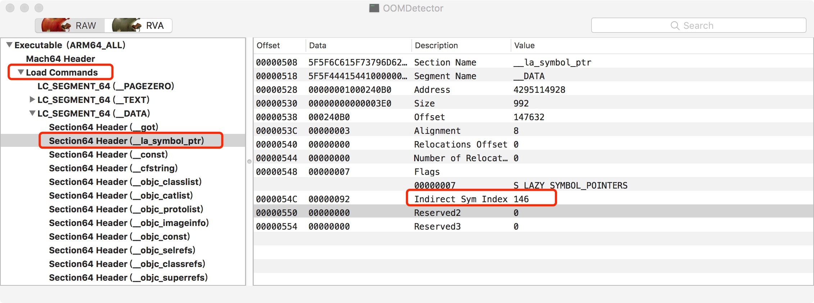
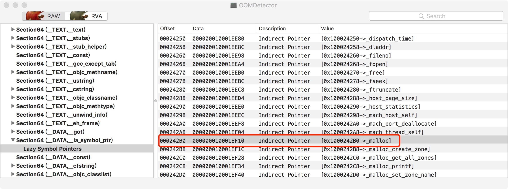
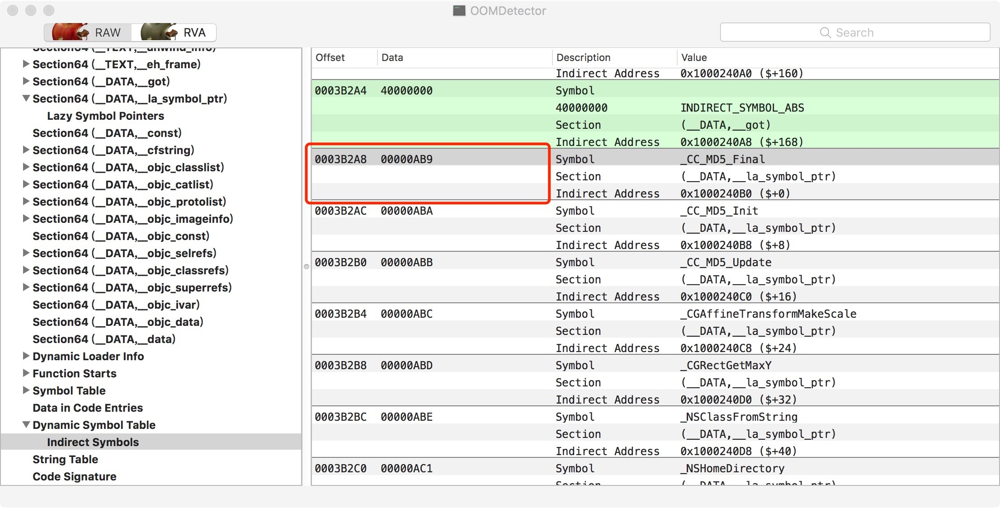
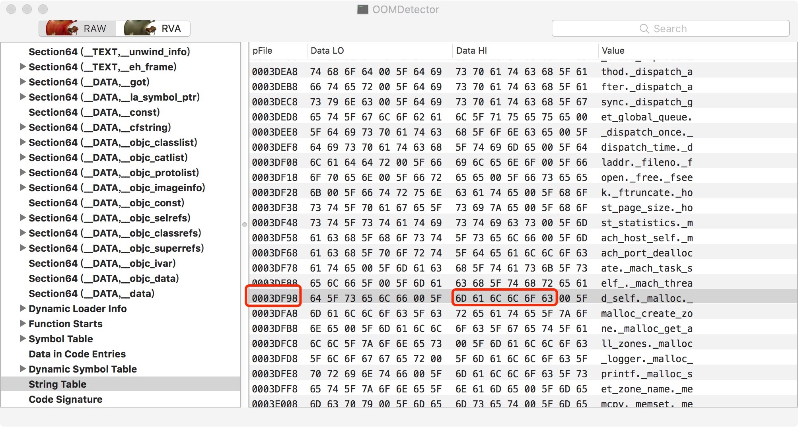

CocoaPods组件化——OC/Swift动静态库混用
缘起
一个swift库，charts。
项目本身是通过 cocoapods 进行组件化管理的。
在没有集成 charts 之前，一切都是那么的美好，天是晴的，雨是停的。
直到有一天，因为业务需要图表功能，经一番调研之后，选择了 charts 集成到工程之中。
然后噩梦就开始了。
直接集成跑项目会直接报上百个错，因为 charts 是用swift写的，错误简要如下:
Undefined symbols for architecture x86_64:
"protocol witness table for Swift.Double : Swift.CVarArg in Swift", referenced from:
static Charts.XFChartString.format2f(number: Swift.Double) -> Swift.String in libCharts.a(XFChartUtils.o)
"base conformance descriptor for Swift.Comparable: Swift.Equatable", referenced from:
protocol conformance descriptor for Charts.(LineAlt in _35CAD2F96B83BFC8E7052E13186FFBAD) : Swift.Comparable in Charts in libCharts.a(DataApproximator+N.o)
"method descriptor for static Swift.Comparable.< infix(A, A) -> Swift.Bool", referenced from:
protocol conformance descriptor for Charts.(LineAlt in _35CAD2F96B83BFC8E7052E13186FFBAD) : Swift.Comparable in Charts in libCharts.a(DataApproximator+N.o)
当时没想太多（这就是过于依赖搜索了，连分析都没直接去搜），搜的如何的oc项目通过 pod 集成swift代码。
大概翻了几篇的意思是swift只能动态库打包，需要 pod 管理的库改成动态库，其实这都是老黄历了，都是 pod1.5 之前的方案，不过我当时还是无脑跟着这么做了。
其实在这时候里胜利只差一步，结果绕了一个大弯子。如果不想看我废话这么多的，可以直接转到结局去看。
use_frameworks!
在 Podfile中加入 use_frameworks!，就可以让 pod 管理的库都改成动态库。
加上之后，重新 pod install 一下。
然后项目一跑，果然不报错了，哎呦，牛逼，这就解决了。
心里美滋滋的，现在回头来看，还是太年轻了，直接把库都弄成动态库，后面还有成吨的依赖问题在等着我。。
就如下面的标题：
动静态库 pod 内部依赖静态lib，静态framewor，动态framework，都是坑！
动态库 Pod 中嵌入静态 lib
先说一下最先遇到的就是动态库 Pod 中嵌入静态lib。
vendored_library属性对应依赖的.a，然后依赖系统库在library，frameworks里加上。
最后就是.h,如果你不想暴露的话public_header_files里加完就不用管了，如果想要暴露给别人调用，只能source_files里再加一遍.h。
不想在source_files里再写一遍的也可以建个.h引用一遍所有.a的头文件，最后source_files写你自己的.h，但这只是保证我到处可以通过引用自己的头文件实现方法调用，并不能单个引用对应.a的头文件。
动态库 Pod 嵌入静态 Framework
对静态的Framework封装的时候可以说是最简单的了，vendored_frameworks加上去基本就万事大吉了，至于依赖啥系统库什么的跟上面一样。
动态库 Pod 嵌入动态 Framework
对于动态的Framework封装，是最恶心的，就算不用 pod 也是很麻烦的。
不用 pod 你要手动把这SDK拖到Embedded Binaries位置头文件才能引用，这个是苹果现在引用动态Framework的方法。
下面讲一下 pod 怎么搞，如果单纯framework做 pod，首先public_header_files要指定xxx.framework/Headers/{.h}不然头文件找不到。
其次source_files里看具体编译情况决定加不加xxx.framework/Headers/{.h}，然后就是比较普通的地方vendored_frameworks指定好就完事了。
source_files这个加了的时候还有一个前提就是Framework内引用全是""不能<>，所以大部分情况source_files不加。
另一种混合使用感觉这才是最常见的。
这时候不要指定Framework的public_header_files，写一个自己的头文件引用类，把想公开可以调用的写在在头文件引用类里如：#import <xxx.framework/xxx.h>，间接把xxx.h暴露出来。
静态库 Pod 资源文件的调用
静态库其实还好，跟 pod 有关的resourced都在相应的 pod库名.bundle 之中。
只需要用下面方法，就可以取出bundle，然海找相应的资源。
+ (NSBundle *)staticLibBundleWithModuleName:(NSString *)moduleName {
NSURL *bundleURL = [[NSBundle mainBundle] URLForResource:moduleName withExtension:@"bundle"];
NSBundle *bundle = [NSBundle bundleWithURL:bundleURL];
return bundle;
}
动态库 Pod 资源文件的调用
每错，新坑出来了，动态 pod 中的静态framework，所依赖的资源图片找不到了。
打开ipa一看，路径全变了，pod 建动态库的时候的bundle都在相应的Framework里了。
大概路径就是：xxx.ipa/Frameworks/xxxpod.framework/xxxpod.bundle
真坑。。
所以获取bundle的方法改成下面的了。
+ (NSBundle *)dynamicLibBundleWithModuleName:(NSString *)moduleName {
NSURL *bundleURL = [[NSBundle mainBundle] URLForResource:@"Frameworks" withExtension:nil];
bundleURL = [bundleURL URLByAppendingPathComponent:moduleName];
bundleURL = [bundleURL URLByAppendingPathExtension:@"framework"];
bundleURL = [bundleURL URLByAppendingPathComponent:moduleName];
bundleURL = [bundleURL URLByAppendingPathExtension:@"bundle"];
NSBundle *bundle = [NSBundle bundleWithURL:bundleURL];
return bundle;
}
关于动静之争
关于动态库和静态库的优劣网上一堆一堆的文章在说，这里就不废话了。
不过我个人倾向是用静态库的，事少，而且启动速度一些，说白了就是空间换时间。
安卓的art技术也是在空间换时间。
这年头空间哪有时间贵啊，手机容量再小，连这点都没有的那也不是我们的有效客户了。
结局
故事的答案是，我一开始以为swift不能打成静态库，所以导致的报错，其实并不是的。
当时报这个错是 Undefined symbols 错误，在后来把报错一搜，找到了 stackoverflow 上一个帖子。
大概意思就是这个OC的项目不知道要编译Swift的代码才报错，只需要在主工程中，建一个空的swift文件并自动建一个bridge，然后就可以了。
没错，智慧就是这么简单，而我绕了好大的一个弯。
彩蛋1：Xcode9swift静态库的支持
一开始查的结果其实就是过时的，早在Xcode9，swift就支持打成静态库了，所以不用非要弄成动态库。
彩蛋2: pod1.5 use_modular_headers!
随着支持swift静态库，pod1.5也更新的对应的功能，如果swift的 pod 依赖于某个OC的 pod，需要为该OC版 pod 启用modular headers，所以多了 use_modular_headers!来全局开启，不过开启之后，之前一些不严谨的依赖，可能会报错，需要具体情况具体分析了，网上相关的文章也很多，就不在这里一一赘述了。而且我也不建议这种跨语言的交叉依赖，比如我的项目主要是OC，依赖的swift版 pod，就是纯swift写的。
再来点废话
虽然是过去式了，但是之前用 use_frameworks! 的时候，发现会给每一个 pod 创建一个 umbrella.h 文件，而这个文件里会有 pod 里所有的.h，当然这个是可以通过 podspec 中的属性控制的。如果 pod 里有 cpp 之类的文件，各种引用问题就很烦人了，还得一点一点改。
这是去年建新项目的时候一点心路历程，只是大概记个印象了，有的细节也不是很清楚了，等后面再遇到或者想起来了，再补充把。
引用：
https://stackoverflow.com/questions/52536380why-linker-link-static-libraries-with-errors-ios
https://cloud.tencent.com/developer/news/252403
https://www.jianshu.com/p/10ed66dae403
https://blog.csdn.net/ios8988/article/details/84111011
https://www.jianshu.com/p/544df88b6a1e
https://www.jianshu.com/p/be9c848d050f
https://www.jianshu.com/p/4be1ef1dc3ff
https://www.jianshu.com/p/dfe9a1e1db7f
https://www.jianshu.com/p/913df8cc1f18
https://www.jianshu.com/p/35db14a4931c
https://zhuanlan.zhihu.com/p/50571342
Objective-C Type Encodings
转自：nshipster，觉得再某些场景上有点用，就直接抄过来了。
@encode，@编译器指令 之一，返回一个给定类型编码为一种内部表示的字符串（例如，@encode(int) → i），类似于 ANSI C 的 typeof 操作。苹果的 Objective-C 运行时库内部利用类型编码帮助加快消息分发。
这里有一个所有不同的 Objective-C 类型编码的概要：
Objective-C Type Encodings
| 编码 | 意义 |
|---|---|
c |
A char |
i |
An int |
s |
A short |
l |
A longl is treated as a 32-bit quantity on 64-bit programs. |
q |
A long long |
C |
An unsigned char |
I |
An unsigned int |
S |
An unsigned short |
L |
An unsigned long |
Q |
An unsigned long long |
f |
A float |
d |
A double |
B |
A C++ bool or a C99 _Bool |
v |
A void |
* |
A character string (char *) |
@ |
An object (whether statically typed or typed id) |
# |
A class object (Class) |
: |
A method selector (SEL) |
[*array type*] |
An array |
{*name=type...*} |
A structure |
(*name*=*type...*) |
A union |
bnum |
A bit field of *num* bits |
^type |
A pointer to type |
? |
An unknown type (among other things, this code is used for function pointers) |
当然，用图表很不错，但是用代码实践更好：
NSLog(@"int : %s", @encode(int));
NSLog(@"float : %s", @encode(float));
NSLog(@"float * : %s", @encode(float*));
NSLog(@"char : %s", @encode(char));
NSLog(@"char * : %s", @encode(char *));
NSLog(@"BOOL : %s", @encode(BOOL));
NSLog(@"void : %s", @encode(void));
NSLog(@"void * : %s", @encode(void *));
NSLog(@"NSObject * : %s", @encode(NSObject *));
NSLog(@"NSObject : %s", @encode(NSObject));
NSLog(@"[NSObject] : %s", @encode(typeof([NSObject class])));
NSLog(@"NSError ** : %s", @encode(typeof(NSError **)));
int intArray[5] = {1, 2, 3, 4, 5};
NSLog(@"int[] : %s", @encode(typeof(intArray)));
float floatArray[3] = {0.1f, 0.2f, 0.3f};
NSLog(@"float[] : %s", @encode(typeof(floatArray)));
typedef struct _struct {
short a;
long long b;
unsigned long long c;
} Struct;
NSLog(@"struct : %s", @encode(typeof(Struct)));
结果：
| 类型 | 编码 |
|---|---|
int |
i |
float |
f |
float * |
^f |
char |
c |
char * |
* |
BOOL |
c |
void |
v |
void * |
^v |
NSObject * |
@ |
NSObject |
# |
[NSObject] |
{NSObject=#} |
NSError ** |
^@ |
int[] |
[5i] |
float[] |
[3f] |
struct |
{_struct=sqQ} |
这里有一些特别需要注意的：
- 指针的标准编码是加一个前置的
^，而char *拥有自己的编码*。这在概念上是很好理解的，因为 C 的字符串被认为是一个实体，而不是指针。 BOOL是c，而不是某些人以为的i。原因是char比int小，且在 80 年代 Objective-C 最开始设计的时候，每一个 bit 位都比今天的要值钱（就像美元一样）。BOOL更确切地说是signed char（即使设置了-funsigned-char参数），以在不同编译器之间保持一致，因为char可以是signed或者unsigned。- 直接传入
NSObject将产生#。但是传入[NSObject class]产生一个名为NSObject只有一个类字段的结构体。很明显，那就是isa字段，所有的NSObject实例都用它来表示自己的类型。
方法编码
如苹果的 “Objective-C Runtime Programming Guide” 中所提到的，有一大把内部使用的类型编码无法用 @encode() 返回。
以下是协议中声明的方法的类型修饰符：
Objective-C Method Encodings
| 编码 | 意义 |
|---|---|
r |
const |
n |
in |
N |
inout |
o |
out |
O |
bycopy |
R |
byref |
V |
oneway |
对于那些熟悉 NSDistantObject 的人，你无疑会认出这些是 Distributed Objects 的残留。
尽管 DO (Distributed Objects) 在 iOS 时代已经不那么时髦了，它仍是用于 Cocoa 应用程序进程间通信的协议————甚至用于网络上的不同机器之间。在这些约束下，上下文里附加的内容就带来了很多好处。
例如，分页式的对象消息的参数默认是用代理传递的。在那些没必要用到低效的代理的情况下，增加一个 bycopy 修饰符以保证发送了一份完整的拷贝。同样，默认情况下，带用 inout 的参数表明它在发消息时对象即可传入又可传出。将参数特别标注为 in 或 out，程序将避免一些来回的开销。
我们从对 Objective-C 的类型编码的全新理解上能得到什么呢？ 不瞒您说，其实没多少（除非你在做一些疯狂的元编程）。
但是就如我们最开始所说的，在追求破译密文的过程中要用到不少智慧。
看看类型编码为我们展现的有关 Objective-C 内部的细节，这本身就是一种高尚的追求。如果刨根问到底的话，我们需要了解一下 Distributed Objects 神秘的历史以及那 至今仍然存在 的复杂的参数修饰符。
Objective-C：为什么分类中不能直接添加属性
为什么分类中不能直接添加属性，这个也是一个经典的面试题了。
搜了一些相关文章，再结合源码做了一个小小的总结。
其实通过这个问题，也可以一瞥 OC 中类的实现。
源码
先晒一下OC类和分类的部分源码：
typedef struct objc_class *Class;
struct objc_class : objc_object {
// Class ISA;
Class superclass;
cache_t cache; // formerly cache pointer and vtable
class_data_bits_t bits; // class_rw_t * plus custom rr/alloc flags
...
}
struct class_data_bits_t {
...
class_rw_t* data() {
return (class_rw_t *)(bits & FAST_DATA_MASK);
}
...
}
struct class_rw_t {
// Be warned that Symbolication knows the layout of this structure.
uint32_t flags;
uint32_t version;
const class_ro_t *ro;
method_array_t methods;
property_array_t properties;
protocol_array_t protocols;
Class firstSubclass;
Class nextSiblingClass;
char *demangledName;
...
}
struct class_ro_t {
uint32_t flags;
uint32_t instanceStart;
uint32_t instanceSize;
#ifdef __LP64__
uint32_t reserved;
#endif
const uint8_t * ivarLayout;
const char * name;
method_list_t * baseMethodList;
protocol_list_t * baseProtocols;
const ivar_list_t * ivars;
const uint8_t * weakIvarLayout;
property_list_t *baseProperties;
method_list_t *baseMethods() const {
return baseMethodList;
}
};
从上面可以看出来Objective-C类是由Class类型来表示的，它实际上是一个指向objc_class结构体的指针。
ivars是objc_ivar_list（成员变量列表）指针，其在objc_class中关系如下。
objc_class -> class_data_bits_t bits -> class_rw_t* data() -> const class_ro_t *ro -> const ivar_list_t * ivars;
再看一下Category的定义。
typedef struct category_t *Category;
struct category_t {
const char *name;
classref_t cls;
struct method_list_t *instanceMethods;
struct method_list_t *classMethods;
struct protocol_list_t *protocols;
struct property_list_t *instanceProperties;
// Fields below this point are not always present on disk.
struct property_list_t *_classProperties;
method_list_t *methodsForMeta(bool isMeta) {
if (isMeta) return classMethods;
else return instanceMethods;
}
property_list_t *propertiesForMeta(bool isMeta, struct header_info *hi);
};
从Category的定义也可以看出Category有实例方法，类方法，甚至可以实现协议，添加属性，但是没有实例变量。
分析
参考了位博主文章之后，这里再补充一下。
博主文章链接：http://www.jianshu.com/p/935142af6a47
通过上面的文章里面的详细介绍以及打印输出，可以看到，在一个分类中添加了一个属性，Xcode不会自动的为其生成一个下划线开头的成员变量及set和get方法。
如果你没有手动的实现这两个方法，直接在外面通过点语法调用这个属性，肯定就直接挂了，Unrecognised selector send to instance。
因为他就没有这两个方法，能不挂吗？所以当你真的在分类中声明了一个属性的时候，就要手动的去实现这个属性的set和get方法，这个时候就要用到运行时机制了，关联上去这个属性的存取过程。
结论
为什么不能为手动添加一个下划线开头的成员变量，然后在实现存取器方法的时候对这个成员变量来存取呢？非要用到所谓的运行时吗？
答案是因为：成员变量是一个类的东西，分类本身就不是一个类，它并没有自己的bits，以及后面的一些东西，分类本来就是OC里面通过运行时动态的为一个类添加的一些方法和属性等，不是一个真正的类，你怎么给他添加成员变量呢。
而因为在运行期，对象的内存布局已经确定，如果添加实例变量就会破坏类的内部布局，这对编译型语言来说是灾难性的。
总结一下，其实分类中是可以为一个类添加属性的，但是一定做不到添加成员变量，不要混淆了成员变量和属性的概念。
只是说现在Xcode自动会给属性生成成员变量让大家对这个概念有点混淆。Property是Property，Ivar是Ivar。
有兴趣可以研究一下类是怎么被创建出来的，类最开始生成了很多基本属性，比如IvarList，MethodList，分类只会将自己的method attach到主类，并不会影响到主类的IvarList。
这就是为什么分类里面不能增加成员变量的原因。
参考
https://blog.csdn.net/JGL357/article/details/79127483
https://www.jianshu.com/p/8aa63f7e98d1
https://blog.csdn.net/mumuyinyin/article/details/72854579
https://tech.meituan.com/DiveIntoCategory.html
Fishhook-源码分析
Fishhook-源码分析
看腾讯开源的iOS内存监控组件OOMDetector的过程中，发现其内部使用了Facebook开源的fishhook。遂跟着研究了一下这个库。
fishhook可以在模拟器和设备上的iOS上运行的Mach-O二进制文件中动态重新绑定符号，可以交换C的函数。
fishhook代码量不多，一共就两个文件fishhook.h和fishhook.c。其中.c文件只有200多行，整体所以看起来不是很复杂的，不过其中涉及到了 Mach-O 和函数指针相关的知识，想看懂这些代码还是需要一些基础的。
先看一下调用流程。
调用流程
int rebind_symbols_image(void *header,
intptr_t slide,
struct rebinding rebindings[],
size_t rebindings_nel);
int rebind_symbols(struct rebinding rebindings[], size_t rebindings_nel);
这两个函数是暴漏在.h，给用户调用的，其内部都是直接或者间接调用了
static void rebind_symbols_for_image(struct rebindings_entry *rebindings,
const struct mach_header *header,
intptr_t slide);
接着最终调用
static void perform_rebinding_with_section(struct rebindings_entry *rebindings,
section_t *section,
intptr_t slide,
nlist_t *symtab,
char *strtab,
uint32_t *indirect_symtab);
大概流程就是这样了，其中在perform_rebinding_with_section函数中这段代码是交换函数的地方
if (cur->rebindings[j].replaced != NULL &&
indirect_symbol_bindings[i] != cur->rebindings[j].replacement) {
*(cur->rebindings[j].replaced) = indirect_symbol_bindings[i];
}
indirect_symbol_bindings[i] = cur->rebindings[j].replacement;
实例应用（OOMDetector中替换malloc等函数）
此实例是OOMDetector使用fishhook替换malloc函数。
下面的替换malloc等函数的入口函数hookMalloc，该函数调用了OOMDetector的rebind_symbols_for_imagename函数。
void hookMalloc()
{
if(!isPaused){
beSureAllRebindingFuncBeenCalled();
orig_malloc = malloc;
orig_calloc = calloc;
orig_valloc = valloc;
orig_realloc = realloc;
orig_block_copy = _Block_copy;
rebind_symbols_for_imagename(
(struct rebinding[5]){
{"realloc",(void*)new_realloc,(void**)&orig_realloc},
{"malloc", (void*)new_malloc, (void **)&orig_malloc},
{"valloc",(void*)new_valloc,(void**)&orig_valloc},
{"calloc",(void*)new_calloc,(void**)&orig_calloc},
{"_Block_copy",(void*)new_block_copy,(void**)&orig_block_copy}},
5,
getImagename());
}
else{
isPaused = false;
}
}
hookMalloc替换了realloc、malloc、valloc、calloc、_Block_copy这几个函数。
下面是新的new_malloc函数定义：
static void* (*orig_malloc)(size_t);
static void* (*orig_calloc)(size_t, size_t);
static void* (*orig_realloc)(void *, size_t);
static void* (*orig_valloc)(size_t);
static void* (*orig_block_copy)(const void *aBlock);
下面是rebind_symbols_for_imagename第三个入参————镜像名称的获取方式：
const char *getImagename()
{
const char* name = _dyld_get_image_name(0);
const char* tmp = strrchr(name, '/');
if (tmp) {
name = tmp + 1;
}
return name;
}
调用了<mach-o/dyld.h> 头文件中的_dyld_get_image_name函数。 _dyld_get_image_name 根据镜像的索引，获取镜像的名称。strrchr函数是反向查找第一个给定字符。返回第一次匹配到的地址指针。
rebind_symbols_for_imagename函数是调用了fishhook中的rebind_symbols_image函数实现了函数的交换。
void rebind_symbols_for_imagename(struct rebinding rebindings[],
size_t rebindings_nel,
const char *imagename)
{
uint32_t count = _dyld_image_count();
for (uint32_t i = 0; i < count; i++) {
const mach_header_t* header = (const mach_header_t*)_dyld_get_image_header(i);
const char* name = _dyld_get_image_name(i);
const char* tmp = strrchr(name, '/');
long slide = _dyld_get_image_vmaddr_slide(i);
if (tmp) {
name = tmp + 1;
}
if(strcmp(name,imagename) == 0){
rebind_symbols_image((void *)header,
slide,
rebindings,
rebindings_nel);
break;
}
}
}
rebindings承载重新绑定的所有信息，rebindings_nel是rebindings的个数，imagename要替换函数指针镜像名称，也就是只替换名称为imagename文件中的函数指针，其他库不做替换。
_dyld_get_image_header 获取镜像的header头，_dyld_get_image_vmaddr_slide获取镜像的随机启动地址。rebind_symbols_image函数为重新绑定做准备，增加了两个参数，header、slide。header就是加载到内存的中二进制文件的头。slide 的是ALSR技术中的随机启动地址。这个地址的含义可以参考iOS crash reports: atos not working as expected、 iOS crash log 解析 symbol address = stack address - slide 运行时获取slide的api 利用dwarfdump从dsym文件中得到symbol 。
关于ALSR
下面为了理解ALSR中的slide，贴出一段测试代码：
void understandALSR()
{
///枚举所有镜像
for (int i = 0; i < _dyld_image_count(); i++)
{
char *image_name = (char *)_dyld_get_image_name(i);
const struct mach_header *mh = _dyld_get_image_header(i);
intptr_t vmaddr_slide = _dyld_get_image_vmaddr_slide(i);
printf("Image name %s ,image header 0x%llx , ASLR slide 0x%lx.\n",
image_name, (mach_vm_address_t)mh, vmaddr_slide);
}
}
输出如下：
Image name /Applications/Xcode.app/Contents/Developer/Platforms/iPhoneOS.platform/Developer/Library/CoreSimulator/Profiles/Runtimes/iOS.simruntime/Contents/Resources/RuntimeRoot/usr/lib/dyld_sim ,image header 0x107ca6000 , ASLR slide 0x107ca6000.
Image name /Users/ankang/Library/Developer/CoreSimulator/Devices/C9991234-7FA4-4F9E-9C73-629AFC886DC1/data/Containers/Bundle/Application/5C4118B1-2236-4A9C-B0A3-0DF77D765054/LearnMachO.app/LearnMachO ,image header 0x107c9c000 , ASLR slide 0x7c9c000.
代码对应的二进制文件中的加载地址（链接时load address）示意图：


结合上面的示例代码和二进制内容图片，可以诠释下面的公式：
slide = (运行时)load address - (链接时)load address;
symble address ＝ stack address - slide；
其中：
- stack address ： 程序运行时线程栈中所有函数调用的地址。
- symble address ： dsym文件中函数符号对应的地址，用此地址在dsym文件中可以查出对应的符号信息。
可以看出，没有ASLR时：
symble address = stack address
源码分析
fishhook代码这么少，所以可以进行一次全面的分析了。
首先，fishhook定义了一个结构体，存储绑定的数据。定义如下：
/*
* A structure representing a particular intended rebinding from a symbol
* name to its replacement
*/
struct rebinding {
const char *name; ` //替换的函数名字
void *replacement; //替换后的函数指针
void **replaced; //原始的方法
};
接着看rebind_symbols_image函数：
int rebind_symbols_image(void *header,
intptr_t slide,
struct rebinding rebindings[],
size_t rebindings_nel) {
struct rebindings_entry *rebindings_head = NULL;
int retval = prepend_rebindings(&rebindings_head, rebindings, rebindings_nel);
rebind_symbols_for_image(rebindings_head, (const struct mach_header *) header, slide);
if (rebindings_head) {
free(rebindings_head->rebindings);
}
free(rebindings_head);
return retval;
}
rebind_symbols_image 主要工作是通过prepend_rebindings构造绑定的结构体struct rebindings_entry，定义如下：
struct rebindings_entry {
struct rebinding *rebindings;
size_t rebindings_nel;
struct rebindings_entry *next;
};
static int prepend_rebindings(struct rebindings_entry **rebindings_head,
struct rebinding rebindings[],
size_t nel) {
// 申请new_entry地址
struct rebindings_entry *new_entry = (struct rebindings_entry *) malloc(sizeof(struct rebindings_entry));
if (!new_entry) {
return -1;
}
// 给new_entry->rebindings分配内存
new_entry->rebindings = (struct rebinding *) malloc(sizeof(struct rebinding) * nel);
if (!new_entry->rebindings) {
free(new_entry);
return -1;
}
// 拷贝重新绑定信息到new_entry->rebindings
memcpy(new_entry->rebindings, rebindings, sizeof(struct rebinding) * nel);
new_entry->rebindings_nel = nel;
new_entry->next = *rebindings_head;
// 这个将创建的new_entry赋值给rebindings_head，通过二级指针返回给调用者
*rebindings_head = new_entry;
return 0;
}
prepend_rebindings只是将绑定的struct rebinding类型参数转化为struct rebindings_entry结构，这种结构类似链表，可以方便的管理多个struct rebinding结构。下面看rebind_symbols_for_image：
static void rebind_symbols_for_image(struct rebindings_entry *rebindings,
const struct mach_header *header,
intptr_t slide) {
Dl_info info;
// find the image containing a given address
// 验证库是否存在
if (dladdr(header, &info) == 0) {
return;
}
segment_command_t *cur_seg_cmd;
// SEG_LINKEDIT commond指针
segment_command_t *linkedit_segment = NULL;
// LC_SYMTAB commond指针
struct symtab_command* symtab_cmd = NULL;
// LC_DYSYMTAB commond指针
struct dysymtab_command* dysymtab_cmd = NULL;
// 定位linkedit_segment、symtab_cmd、dysymtab_cmd三指针
uintptr_t cur = (uintptr_t)header + sizeof(mach_header_t);
for (uint i = 0; i < header->ncmds; i++, cur += cur_seg_cmd->cmdsize)
{
cur_seg_cmd = (segment_command_t *)cur;
if (cur_seg_cmd->cmd == LC_SEGMENT_ARCH_DEPENDENT)
{
if (strcmp(cur_seg_cmd->segname, SEG_LINKEDIT) == 0)
{
linkedit_segment = cur_seg_cmd;
}
}
else if (cur_seg_cmd->cmd == LC_SYMTAB)
{
symtab_cmd = (struct symtab_command*)cur_seg_cmd;
}
else if (cur_seg_cmd->cmd == LC_DYSYMTAB)
{
dysymtab_cmd = (struct dysymtab_command*)cur_seg_cmd;
}
}
if (!symtab_cmd || !dysymtab_cmd || !linkedit_segment ||
!dysymtab_cmd->nindirectsyms) {
return;
}
// Find base symbol/string table addresses 查找符号表和string表
uintptr_t linkedit_base = (uintptr_t)slide + linkedit_segment->vmaddr - linkedit_segment->fileoff;
nlist_t *symtab = (nlist_t *)(linkedit_base + symtab_cmd->symoff);
char *strtab = (char *)(linkedit_base + symtab_cmd->stroff);
// Get indirect symbol table (array of uint32_t indices into symbol table)
uint32_t *indirect_symtab = (uint32_t *)(linkedit_base + dysymtab_cmd->indirectsymoff);
cur = (uintptr_t)header + sizeof(mach_header_t);
for (uint i = 0; i < header->ncmds; i++, cur += cur_seg_cmd->cmdsize)
{
cur_seg_cmd = (segment_command_t *)cur;
if (cur_seg_cmd->cmd == LC_SEGMENT_ARCH_DEPENDENT)
{
if (strcmp(cur_seg_cmd->segname, SEG_DATA) != 0 &&
strcmp(cur_seg_cmd->segname, SEG_DATA_CONST) != 0) {
continue;
}
// 找到类型为S_LAZY_SYMBOL_POINTERS、S_NON_LAZY_SYMBOL_POINTERS类型的section
for (uint j = 0; j < cur_seg_cmd->nsects; j++) {
section_t *sect =
(section_t *)(cur + sizeof(segment_command_t)) + j;
if ((sect->flags & SECTION_TYPE) == S_LAZY_SYMBOL_POINTERS) {
perform_rebinding_with_section(rebindings, sect, slide, symtab, strtab, indirect_symtab);
}
if ((sect->flags & SECTION_TYPE) == S_NON_LAZY_SYMBOL_POINTERS) {
perform_rebinding_with_section(rebindings, sect, slide, symtab, strtab, indirect_symtab);
}
}
}
}
}
rebind_symbols_for_image 函数主要定位到三表，类型为S_LAZY_SYMBOL_POINTERS、S_NON_LAZY_SYMBOL_POINTERS类型的section。然后调用perform_rebinding_with_section 函数。其中部分宏定义如下。
#define LC_SEGMENT_ARCH_DEPENDENT LC_SEGMENT_64
#define SEG_LINKEDIT "__LINKEDIT"
#define S_NON_LAZY_SYMBOL_POINTERS 0x6 /* section with only non-lazy symbol pointers */
#define S_LAZY_SYMBOL_POINTERS 0x7 /* section with only lazy symbol
上面的宏定义于<mach-o/loader.h>文件中，位于477行。 在S_NON_LAZY_SYMBOL_POINTERS宏的上面有一段注释。这段注释非常的关键。说明了S_NON_LAZY_SYMBOL_POINTERS类型的section中的数据和动态符号表中的符号是顺序对应的。只有理解了这段内容。才能真正的理解fishhook。
For the two types of symbol pointers sections and the symbol stubs section they have indirect symbol table entries.
对于存储符号指针、符号存根两种类型的section，它们有间接符号表条目。
For each of the entries in the section,the indirect symbol table entries, in corresponding order in the indirect symbol table, start at the index stored in the reserved1 field of the section structure.
间接符号表条目顺序对应section中的条目，对应从section的reserved1索引开始。
Since the indirect symbol table entries correspond to the entries in the section the number of indirect symbol table entries is inferred from the size of the section divided by the size of the entries in the section. For symbol pointers sections the size of the entries in the section is 4 bytes (看结构是8bytes，可能是64位的缘故)
由于间接符号表条目对应于section中的条目，因此间接符号表条目的数量由section的大小除以section中的条目的大小来推断。对于符号指针节，section中的条目的大小是4个字节
下面是perform_rebinding_with_section函数源码：
static void perform_rebinding_with_section(struct rebindings_entry *rebindings,
section_t *section, // section
intptr_t slide, // 基址
nlist_t *symtab, // 符号表
char *strtab, // sting 表
uint32_t *indirect_symtab // 动态符号表
)
{
// 动态符号表 对应section的地址，动态符号表的基地址+section对应的偏移量
uint32_t *indirect_symbol_indices = indirect_symtab + section->reserved1;
// section加载到内存的虚拟地址（是要替换这里面的东西）
void **indirect_symbol_bindings = (void **)((uintptr_t)slide + section->addr);
// section中替换函数指针
for (uint i = 0; i < section->size / sizeof(void *); i++)
{
// 由于section中条目和动态符号表中的条目对应，所以将section中的条目索引i用于动态符号表。
// 下面目的是获取section中存储的函数指针的符号 动态符号表-> 符号表-> string表
// indirect_symbol_indices[i]中存储符号表的索引。symtab_index就是符号表的索引
uint32_t symtab_index = indirect_symbol_indices[i];
if (symtab_index == INDIRECT_SYMBOL_ABS ||
symtab_index == INDIRECT_SYMBOL_LOCAL ||
symtab_index == (INDIRECT_SYMBOL_LOCAL |
INDIRECT_SYMBOL_ABS))
{
continue;
}
// 通过nlist_t的n_strx找到String表的偏移地址，strtab_offset。
uint32_t strtab_offset = symtab[symtab_index].n_un.n_strx;
char *symbol_name = strtab + strtab_offset;
if (strnlen(symbol_name, 2) < 2)
{
continue;
}
///依次枚举struct rebindings_entry 结构，判断时候有和当前函数指针相等的带替换的函数。
struct rebindings_entry *cur = rebindings;
while (cur)
{
for (uint j = 0; j < cur->rebindings_nel; j++)
{
///如果符号名称和替换的名称一样，进行替换
if (strcmp(&symbol_name[1], cur->rebindings[j].name) == 0)
{
if (cur->rebindings[j].replaced != NULL &&
indirect_symbol_bindings[i] != cur->rebindings[j].replacement)
{
///保存原始的指针地址，只保存一次
*(cur->rebindings[j].replaced) = indirect_symbol_bindings[i];
}
///在section中替换。将indirect_symbol_bindings[i]中存储的函数指针地址进行替换。
indirect_symbol_bindings[i] = cur->rebindings[j].replacement;
goto symbol_loop;
}
}
cur = cur->next;
}
symbol_loop:;
}
}
perform_rebinding_with_section函数完成替换的关键函数。 将section中的函数指针替换为新的函数指针。
图解fishhook
同事画的9张图片解释fishhook原理，看代码懵逼的可以看看图，有助于理解

图1. load command中_DATA segement中__la_symbol_ptr section结构图,说明该section和动态符号表对应的起始索引是146

图2.数据区域中__la_symbol_ptr的结构,可以看出该section的起始地址是0x00240B0，图2和图3是为了找malloc函数指针的位置

图3.数据区域中__la_symbol_ptr的结构, 偏移了一定的位置。文件0x000242B0地址出存储的是malloc函数指针。
计算偏移数量的方法：0x242B0 - 0x240B0 = 0x200
每个条目占用8个字节0x200/0x8 = 0x40 = 64
得出：在符号表中，malloc偏移64个条目

图4 .转到数据区域中动态符号表的起始位置处，该图说明动态符号表的起始地址是0x3B0A4

图5 。 计算la_symbol_ptr 对应的符号在动态符号表中的位置： 0x3B060 + 146*4 = 0x3B060 + 0x248 = 0x3B2A8，地址0x0003B2A8处后面的符号和la_symbol_ptr中的条目对应。

图6 . 查找64个偏移后的动态符号表的地址：0x3B2A8 + 0x40*x4 = 0x3B3A8，地址0x3B3A8中存储的值是符号表中的索引，
为0xb32。由于machoviewer看不到符号表，所以用代码查看符号表中索引为0xB32 的符号信息。
查看代码：struct nlist_64 const * mallocNlist =[self getSymbol64ByIndex:0xB32];

图7 .代码查看符号表示意图。符号表的索引为0xB32的符号的信息。可以看出n_strx的值是0x2B07，
这个值指的是string表中的偏移量

图8 .string 表，string表的起始地址是0x3B498

图9 .string 表， 偏移0x2B07 后的结果—— 0x3B498 + 0x2B07 = 0x3DF9F， 这个地址存储的字符串就是图3中
地址为0x10001ef10的函数指针的名称，名称是malloc。这个名称和我么要替换的名称一致，所以替换图3中的
0x10001ef10，替换成新指定函数指针地址。实现替换。
Copyright © 2015 Powered by MWeb, Theme used GitHub CSS.